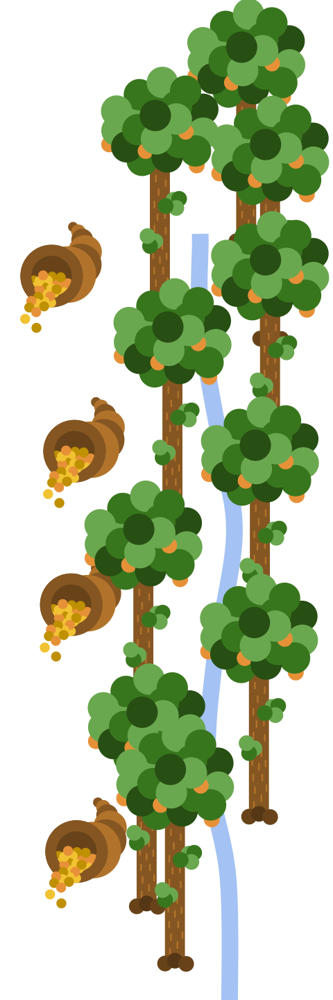

Here lies Barrington's own website, who couldn't break free of its sin despite its best efforts.
These shades once featured websites that had poor navigational abilities, making it extremely frustrating for users to navigate among their many pages. Since they hindered the ability of many to navigate their sites in life, now they are lashed to the ground of Hell, left to starve and thirst for all eternity.
An oasis of goods lies near the middle end of this circle, unreachable by any of the starving and thirsting shades that reside there. This represents how in both life and death, people left unable to navigate were unable to reach their destinations, and by extension, unable to satisfy their needs at the time--only in Hell, the creators are now the ones that suffer.